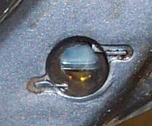
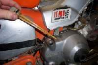

The sight window on the engine cover shows no oil, or the level cannot be read. This does not always mean the engine is empty. Clean oil, a slightly high level, or a window that has gone cloudy with age can all look like an empty window.
Is it safe to ride?
Do not ride until you know the level. Too little oil wrecks an engine. Too much causes smoke and leaks.
Quick checks first
- Is the bike upright and level, not on the side stand?
- Has the oil been given a few minutes to settle after the engine stopped?
- Is the plastic window yellow or scratched?
- Is there a puddle under the bike?
Diagnose it step by step
1Lean the bike a little from upright. Does a level show in the window?
- Yes: that is the real level. Read it between the marks. Add or drain as needed.
- No: go to step 2.
2Add a small amount of oil and lean the bike again. Does the level appear?
- Yes: the oil was low or the level is only just reaching the window. Set it between the marks.
- No: add a little more, and repeat once or twice. If the window still shows nothing, go to step 3.
3Is there a leak or heavy smoke?
- Yes: see Oil leaking under the bike and Oil level drops but there is no visible leak.
- No: go to step 4.
4Drain all the oil and refill with the exact amount in the manual.
- The manual gives separate amounts for an oil change, an oil and filter change, and a dry rebuilt engine. Use the right one. See Change the engine oil and clean the strainer. Then look again.
Causes, most likely first
| Cause | How to confirm | Fix |
|---|---|---|
| Clean oil with the level a little high | Level shows when the bike leans | Check oil with a sight window or level plug |
| Level really low | Level appears only after adding oil | Top up to the marks |
| Cloudy or discoloured plastic | Window cannot be read at any level | Fill to the manual amount |
| Leak or burning oil | Wet trail, smoke, falling level | Oil leaking under the bike |
Adding oil until the window fills without leaning the bike can overfill the engine. Overfilling cuts the air space and can push oil out of seals and the breather. See Too much oil in the engine.